<meta charset="utf-8">
<title>Global Investment — Ürün ve Hizmet Kataloğu</title>
<style>
@page{size:A4;margin:0}
*{box-sizing:border-box;margin:0;padding:0}
:root{
  --mint:#ADFCF9;--sage:#89A894;--green:#4B644A;--plum:#49393B;--brown:#341C1C;
  --cream:#F7F5F0;--paper:#fff;--ink:#241F20;--muted:#6E6866;--line:#DFDBD4;
}
html{-webkit-print-color-adjust:exact;print-color-adjust:exact}
body{font-family:"Liberation Sans","DejaVu Sans",sans-serif;color:var(--ink);background:#8a8a8a;line-height:1.55;font-size:10pt}
.page{width:210mm;height:297mm;position:relative;overflow:hidden;background:var(--cream);page-break-after:always;break-after:page}
.page:last-child{page-break-after:auto}
.pad{padding:22mm 20mm}
/* --- tipografi --- */
.eyebrow{font-size:7.5pt;letter-spacing:.24em;font-weight:700;text-transform:uppercase;color:var(--green)}
.eyebrow.light{color:var(--mint)}
h1{font-size:34pt;line-height:1.02;letter-spacing:-.025em;font-weight:700}
h2{font-size:24pt;line-height:1.08;letter-spacing:-.02em;font-weight:700;margin:6mm 0 4mm}
h3{font-size:12pt;letter-spacing:-.01em;font-weight:700;margin-bottom:1.5mm}
h4{font-size:9.5pt;font-weight:700;letter-spacing:.02em}
p{margin-bottom:3mm;color:#3B3634}
p.lead{font-size:11.5pt;line-height:1.5;color:var(--plum)}
.muted{color:var(--muted)}
.rule{height:2px;background:var(--green);width:18mm;margin:4mm 0}
/* --- kapak --- */
.cover{background:var(--brown)}
.cover img.bg{position:absolute;inset:0;width:100%;height:100%;object-fit:cover;opacity:.82}
.cover .veil{position:absolute;inset:0;background:linear-gradient(180deg,rgba(52,28,28,.72) 0%,rgba(52,28,28,.25) 42%,rgba(52,28,28,.92) 100%)}
.cover .inner{position:absolute;inset:0;padding:22mm 20mm;display:flex;flex-direction:column;justify-content:space-between;color:#fff}
.wordmark{font-size:22pt;font-weight:700;letter-spacing:.30em;line-height:1}
.wordmark small{display:block;font-size:7.5pt;letter-spacing:.30em;font-weight:400;color:var(--mint);margin-top:2.5mm}
.cover h1{font-size:40pt;max-width:150mm}
.cover .foot{display:flex;justify-content:space-between;align-items:flex-end;font-size:8pt;letter-spacing:.12em;text-transform:uppercase;color:#D9D0CB}
/* --- bolum ayraci --- */
.divider{background:var(--brown)}
.divider img.bg{position:absolute;inset:0;width:100%;height:100%;object-fit:cover;opacity:1}
.divider .veil{position:absolute;inset:0;background:linear-gradient(110deg,rgba(52,28,28,.92) 0%,rgba(52,28,28,.80) 48%,rgba(52,28,28,.38) 100%)}
.divider .inner{position:absolute;inset:0;padding:22mm 20mm;display:flex;flex-direction:column;justify-content:center;color:#fff}
.divider h1{max-width:130mm;margin:5mm 0}
.divider p{color:#E4DCD7;max-width:110mm;font-size:11pt}
.bignum{position:absolute;right:16mm;bottom:8mm;font-size:96pt;font-weight:700;color:rgba(255,255,255,.10);line-height:1}
/* --- ust bant --- */
.topbar{display:flex;justify-content:space-between;align-items:baseline;border-bottom:1px solid var(--line);padding-bottom:3mm;margin-bottom:7mm}
.topbar .sec{font-size:7.5pt;letter-spacing:.2em;text-transform:uppercase;color:var(--muted);font-weight:700}
/* --- izgara --- */
.cols2{display:grid;grid-template-columns:1fr 1fr;gap:7mm}
.cols3{display:grid;grid-template-columns:repeat(3,1fr);gap:5mm}
.split{display:grid;grid-template-columns:1.15fr .85fr;gap:8mm;align-items:start}
/* --- kartlar --- */
.card{background:var(--paper);border:1px solid var(--line);border-radius:3mm;padding:4.5mm}
.card p{font-size:8.5pt;color:var(--muted);margin:0}
.card .ico{width:7mm;height:7mm;border-radius:2mm;background:var(--green);color:#fff;display:flex;align-items:center;justify-content:center;font-weight:700;font-size:8.5pt;margin-bottom:2.5mm}
.tile{background:var(--paper);border:1px solid var(--line);border-radius:3mm;overflow:hidden}
.tile img{width:100%;height:38mm;object-fit:cover;display:block}
.tile .body{padding:4mm}
.tile h4{margin-bottom:1mm}
.tile p{font-size:8pt;color:var(--muted);margin:0}
/* --- gorseller --- */
figure{margin:0;border-radius:3mm;overflow:hidden;background:#E7E3DC}
figure img{width:100%;height:100%;object-fit:cover;display:block}
figcaption{font-size:7.5pt;color:var(--muted);padding-top:1.5mm;letter-spacing:.02em}
.ph{border:1.2px dashed var(--sage);border-radius:3mm;background:repeating-linear-gradient(135deg,#F1EFE9,#F1EFE9 6px,#EAE7DF 6px,#EAE7DF 12px);display:flex;flex-direction:column;align-items:center;justify-content:center;text-align:center;padding:6mm;color:var(--green)}
.ph b{font-size:8pt;letter-spacing:.16em;text-transform:uppercase;display:block;margin-bottom:1.5mm}
.ph span{font-size:8pt;color:var(--muted);max-width:60mm;line-height:1.4}
/* --- liste --- */
ul.check{list-style:none}
ul.check li{position:relative;padding-left:6mm;margin-bottom:2mm;font-size:9pt;color:#3B3634}
ul.check li::before{content:"";position:absolute;left:0;top:1.6mm;width:2.6mm;height:2.6mm;background:var(--green);border-radius:.6mm}
ul.dash{list-style:none}
ul.dash li{position:relative;padding-left:5mm;margin-bottom:1.6mm;font-size:8.5pt;color:var(--muted)}
ul.dash li::before{content:"—";position:absolute;left:0;color:var(--sage)}
/* --- surec --- */
.step{display:grid;grid-template-columns:14mm 1fr;gap:4mm;padding:4mm 0;border-bottom:1px solid var(--line)}
.step:last-child{border-bottom:none}
.step .n{font-size:20pt;font-weight:700;color:var(--sage);line-height:1}
.step p{font-size:8.5pt;color:var(--muted);margin:1mm 0 0}
/* --- tablo --- */
table{width:100%;border-collapse:collapse;font-size:8.5pt}
th{text-align:left;font-size:7.5pt;letter-spacing:.14em;text-transform:uppercase;color:var(--green);padding:0 0 2.5mm;border-bottom:1.5px solid var(--green)}
td{padding:2.8mm 0;border-bottom:1px solid var(--line);vertical-align:top;color:#3B3634}
td.k{font-weight:700;width:38%;color:var(--ink)}
/* --- vurgu bant --- */
.band{background:var(--plum);color:#fff;border-radius:4mm;padding:7mm}
.band h3{color:#fff}
.band p{color:#E4DCD7;font-size:9pt}
.band .eyebrow{color:var(--mint)}
.statrow{display:grid;grid-template-columns:repeat(4,1fr);gap:4mm;margin-top:5mm}
.stat b{display:block;font-size:19pt;font-weight:700;color:var(--green);line-height:1.1}
.stat span{font-size:7.5pt;color:var(--muted);letter-spacing:.06em}
.band .stat b{color:var(--mint)}
.band .stat span{color:#C9BFBA}
/* --- sss --- */
.qa{padding:3.5mm 0;border-bottom:1px solid var(--line)}
.qa:last-child{border-bottom:none}
.qa h4{color:var(--plum);margin-bottom:1.2mm}
.qa p{font-size:8.5pt;color:var(--muted);margin:0}
/* --- alt bilgi --- */
.pfoot{position:absolute;left:20mm;right:20mm;bottom:12mm;display:flex;justify-content:space-between;font-size:7pt;letter-spacing:.14em;text-transform:uppercase;color:#A8A29C;border-top:1px solid var(--line);padding-top:2.5mm}
/* --- iletisim --- */
.contact{background:var(--brown);color:#fff}
.contact .inner{position:absolute;inset:0;padding:22mm 20mm;display:flex;flex-direction:column;justify-content:space-between}
.contact h1{font-size:30pt;max-width:140mm}
.contact a,.contact p{color:#E4DCD7}
.cbox{border:1px solid rgba(255,255,255,.22);border-radius:3mm;padding:6mm}
.cbox h4{color:var(--mint);letter-spacing:.14em;text-transform:uppercase;font-size:7.5pt;margin-bottom:2.5mm}
.cbox .v{font-size:12pt;font-weight:700;color:#fff;line-height:1.35}
</style>

<!-- ==================== 1 · KAPAK ==================== -->
<section class="page cover">
  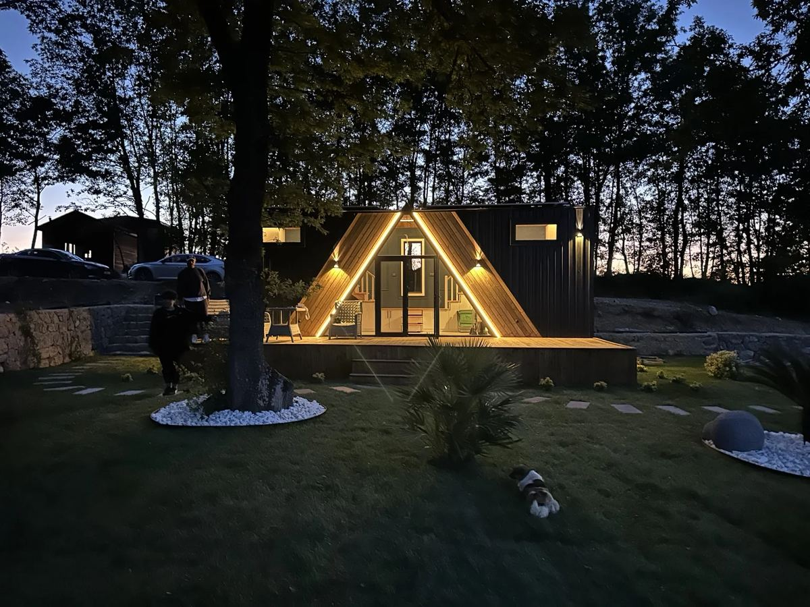
  <div class="veil"></div>
  <div class="inner">
    <div class="wordmark">GLOBAL<small>YAPI GELİŞTİRME A.Ş.</small></div>
    <div>
      <div class="eyebrow light">Ürün ve Hizmet Kataloğu · 2026</div>
      <h1 style="margin-top:6mm">Modüler yapılar ve<br>mobilyada tek çatı,<br>uçtan uca üretim.</h1>
      <p style="color:#DDD4CF;max-width:120mm;margin-top:6mm;font-size:11pt">
        Tiny house, kiosk, karavan ve modüler yapılardan; otel, konut, ofis ve
        iş yeri mobilyasına kadar tasarım, üretim ve montajı tek elden yürütüyoruz.
      </p>
    </div>
    <div class="foot">
      <span>globalyapicelik.net</span>
      <span>+90 546 655 70 70</span>
    </div>
  </div>
</section>

<!-- ==================== 2 · İÇİNDEKİLER ==================== -->
<section class="page"><div class="pad">
  <div class="topbar"><span class="sec">İçindekiler</span><span class="sec">02</span></div>
  <div class="split">
    <div>
      <div class="eyebrow">Bu katalog hakkında</div>
      <h2>Ne yaptığımızı,<br>nasıl yaptığımızı anlatır.</h2>
      <p class="lead">
        Bir işi baştan sona götürmek, parçaları ayrı ayrı yapmaktan farklıdır.
        Biz tasarımı, üretimi, iç mekânı ve mobilyayı aynı atölyede birleştiriyoruz —
        böylece ölçü tutar, takvim kayar gitmez, sorumluluk tek adreste kalır.
      </p>
      <p>
        Bu katalog iki ana üretim kolumuzu tanıtır: <b>modüler yapılar</b> ve
        <b>mobilya</b>. Her bölümde ürünün ne olduğunu, hangi kullanım
        senaryosuna cevap verdiğini ve üretim yaklaşımımızı bulacaksınız.
        Son bölümlerde çalışma sürecimiz, teslimat koşullarımız ve
        sık sorulan sorular yer alır.
      </p>
      <div class="rule"></div>
      <p class="muted" style="font-size:8.5pt">
        Görseller tamamlanmış uygulamalarımızdan ve üretim sahamızdan seçilmiştir.
        Teknik değerler proje kapsamına göre teklif aşamasında netleştirilir.
      </p>
    </div>
    <div>
      <table>
        <tr><td class="k">01</td><td>Kapak</td></tr>
        <tr><td class="k">03</td><td>Biz Kimiz</td></tr>
        <tr><td class="k">04</td><td>Faaliyet Alanları</td></tr>
        <tr><td class="k">05</td><td>Modüler Yapılar</td></tr>
        <tr><td class="k">06</td><td>Tiny House</td></tr>
        <tr><td class="k">07</td><td>Tiny House · İç Mekân</td></tr>
        <tr><td class="k">08</td><td>Kiosk & Coffee Kiosk</td></tr>
        <tr><td class="k">09</td><td>Karavan</td></tr>
        <tr><td class="k">10</td><td>Kafe, Restoran ve Sosyal Alanlar</td></tr>
        <tr><td class="k">11</td><td>Mobilya</td></tr>
        <tr><td class="k">12</td><td>Otel Mobilyası</td></tr>
        <tr><td class="k">13</td><td>Ev Mobilyası</td></tr>
        <tr><td class="k">14</td><td>Ofis ve İş Yeri · Ofis Düzenleme</td></tr>
        <tr><td class="k">15</td><td>Üretim ve Malzeme</td></tr>
        <tr><td class="k">16</td><td>Nasıl Çalışıyoruz</td></tr>
        <tr><td class="k">17</td><td>Teslimat, Montaj ve Garanti</td></tr>
        <tr><td class="k">18</td><td>Sık Sorulan Sorular</td></tr>
        <tr><td class="k">19</td><td>İletişim</td></tr>
      </table>
    </div>
  </div>
  <div class="pfoot"><span>Global Yapı Geliştirme A.Ş.</span><span>Ürün ve Hizmet Kataloğu 2026</span></div>
</div></section>

<!-- ==================== 3 · BİZ KİMİZ ==================== -->
<section class="page"><div class="pad">
  <div class="topbar"><span class="sec">Biz Kimiz</span><span class="sec">03</span></div>
  <div class="eyebrow">Kurumsal</div>
  <h2>Üretim odaklı bir<br>yapı ve mobilya markası.</h2>
  <div class="split" style="margin-top:2mm">
    <div>
      <p class="lead">
        Kendi atölyemizde çelik konstrüksiyon, ahşap işçiliği ve mobilya üretimini
        bir arada yürütüyoruz. Bir tiny house’un şasisini de, içindeki mutfağı da,
        bir otelin odasına giren gardırobu da aynı ekip üretir.
      </p>
      <p>
        Bu yapının en somut faydası kontrol. Tasarımdan montaja kadar süreç tek
        elde olduğu için ölçü hataları, tedarikçiler arası gecikmeler ve
        “kimin işi” tartışmaları ortadan kalkar. Müşterinin muhatabı tektir.
      </p>
      <p>
        İşimizi iki kolda topluyoruz. <b>Modüler yapılar</b> tarafında tiny house,
        kiosk, coffee kiosk, karavan ve özel modüler üniteler üretiyoruz.
        <b>Mobilya</b> tarafında otel, konut, ofis ve iş yeri projelerinin
        mobilya ve iç mekân düzenlemesini üstleniyoruz.
      </p>
      <p>
        Turizm tesislerinden bireysel konut sahiplerine, kafe işletmecilerinden
        kurumsal ofislere kadar farklı ölçeklerde çalışıyoruz. Tek bir ünite de
        üretiyoruz, seri halde tesis donanımı da.
      </p>
      <div class="rule"></div>
      <ul class="check">
        <li><b>Tek muhatap:</b> tasarım, üretim, nakliye, montaj tek sözleşmede.</li>
        <li><b>Kendi atölyemiz:</b> fason değil, kontrollü üretim.</li>
        <li><b>Proje bazlı tasarım:</b> hazır kalıp değil, ihtiyaca göre ölçü.</li>
        <li><b>Anahtar teslim:</b> elektrik, tesisat, iç mekân ve mobilya dahil.</li>
      </ul>
    </div>
    <div>
      <figure style="height:88mm">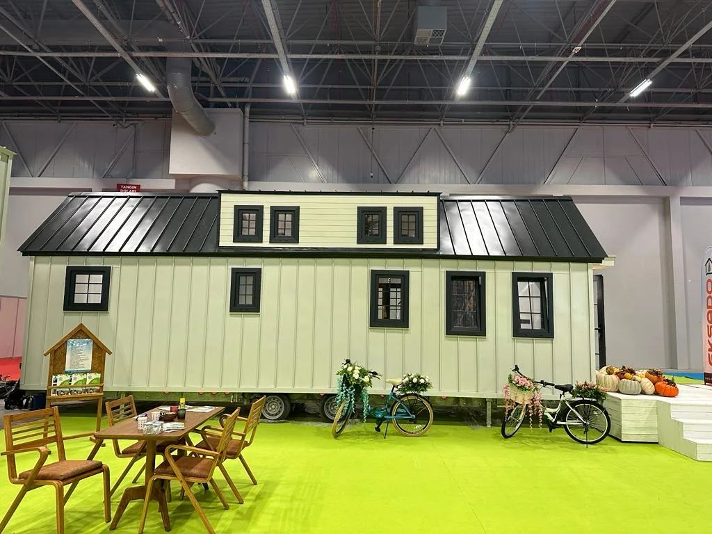</figure>
      <figcaption>Üretim tesisimizde tamamlanma aşamasındaki bir ünite</figcaption>
      <div class="band" style="margin-top:6mm;padding:5mm">
        <div class="eyebrow">Yaklaşımımız</div>
        <p style="margin-top:2mm;font-size:9.5pt;line-height:1.5">
          “Küçük alan, küçük iş demek değildir. Dar bir hacmi doğru kurmak,
          geniş bir hacmi kurmaktan daha çok detay ister.”
        </p>
      </div>
    </div>
  </div>
  <div class="pfoot"><span>Biz Kimiz</span><span>03</span></div>
</div></section>

<!-- ==================== 4 · FAALİYET ALANLARI ==================== -->
<section class="page"><div class="pad">
  <div class="topbar"><span class="sec">Faaliyet Alanları</span><span class="sec">04</span></div>
  <div class="eyebrow">Bir bakışta</div>
  <h2>İki üretim kolu,<br>sekiz çalışma alanı.</h2>
  <p style="max-width:130mm">
    Ürünlerimiz farklı görünse de aynı temele dayanır: doğru ölçü, sağlam
    konstrüksiyon ve temiz işçilik. Aşağıdaki alanların tamamında tasarımdan
    montaja kadar hizmet veriyoruz.
  </p>

  <div class="eyebrow" style="margin-top:5mm">A · Modüler Yapılar</div>
  <div class="cols2" style="margin-top:3mm">
    <div class="card"><div class="ico">01</div><h3>Tiny House</h3>
      <p>Sabit veya tekerlekli, tam donanımlı kompakt yaşam üniteleri. Konut, bungalov, resort odası ve ofis kullanımına uygun.</p></div>
    <div class="card"><div class="ico">02</div><h3>Kiosk & Coffee Kiosk</h3>
      <p>Satış, kahve ve büfe üniteleri. AVM, cadde, kampüs ve etkinlik alanları için hazır tezgâh ve ekipman altyapısıyla.</p></div>
    <div class="card"><div class="ico">03</div><h3>Karavan</h3>
      <p>Çekme karavan ve mobil yaşam üniteleri. Şasi, izolasyon, mutfak ve ıslak hacim çözümleriyle birlikte.</p></div>
    <div class="card"><div class="ico">04</div><h3>Özel Modüler Yapılar</h3>
      <p>Kafe, restoran, satış ofisi, saha ofisi ve sosyal alan üniteleri. Çelik konstrüksiyon üzerine projeye özel tasarım.</p></div>
  </div>

  <div class="eyebrow" style="margin-top:5mm">B · Mobilya ve İç Mekân</div>
  <div class="cols2" style="margin-top:3mm">
    <div class="card"><div class="ico">05</div><h3>Otel Mobilyası</h3>
      <p>Oda takımları, gardırop, karyola, minibar ünitesi, lobi ve restoran mobilyası. Tesis geneli seri üretim.</p></div>
    <div class="card"><div class="ico">06</div><h3>Ev Mobilyası</h3>
      <p>Mutfak, gardırop, TV ünitesi, banyo dolabı ve ölçüye özel oturma grupları. Ölçü alımından montaja.</p></div>
    <div class="card"><div class="ico">07</div><h3>İş Yeri Mobilyası</h3>
      <p>Mağaza, kafe ve restoran mobilyası; tezgâh, raf sistemi, oturma birimleri ve vitrin çözümleri.</p></div>
    <div class="card"><div class="ico">08</div><h3>Ofis Düzenleme</h3>
      <p>Çalışma masaları, toplantı ve bekleme alanları, dolap sistemleri ve alan planlaması ile birlikte kurulum.</p></div>
  </div>

  <div class="pfoot"><span>Faaliyet Alanları</span><span>04</span></div>
</div></section>

<!-- ==================== 5 · AYRAÇ: MODÜLER YAPILAR ==================== -->
<section class="page divider">
  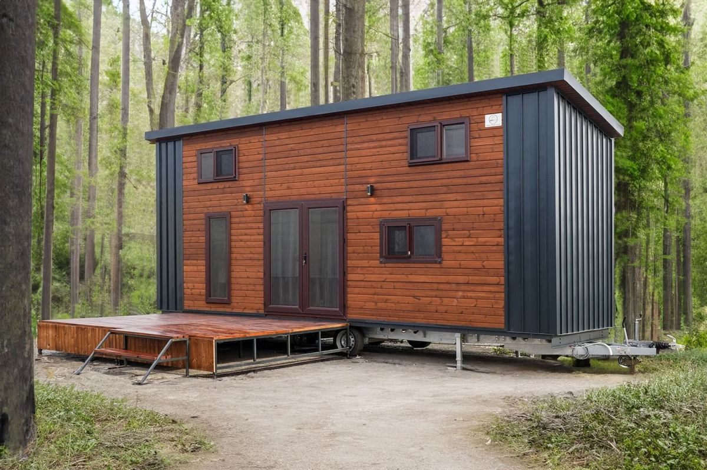
  <div class="veil"></div>
  <div class="inner">
    <div class="eyebrow light">Bölüm A</div>
    <h1>Modüler Yapılar</h1>
    <p>
      Fabrikada üretilen, sahada kurulan yapılar. Klasik inşaata göre daha kısa
      sürede biter, hava koşullarından etkilenmez ve gerektiğinde taşınabilir.
      Tiny house’tan kioska, karavandan özel sosyal alan ünitelerine kadar
      çelik konstrüksiyon üzerine kuruyoruz.
    </p>
    <div class="bignum">A</div>
  </div>
</section>

<!-- ==================== 6 · TINY HOUSE ==================== -->
<section class="page"><div class="pad">
  <div class="topbar"><span class="sec">Modüler Yapılar · Tiny House</span><span class="sec">06</span></div>
  <div class="eyebrow">Ürün</div>
  <h2>Tiny House</h2>
  <div class="split">
    <div>
      <p class="lead">
        Küçük metrekarede tam donanımlı yaşam. Mutfağı, ıslak hacmi, yatak alanı
        ve depolaması eksiksiz kurulmuş, taşınmaya hazır teslim edilen yapılar.
      </p>
      <p>
        İki temel kurulumda üretiyoruz. <b>Sabit modeller</b> hazırlanmış bir zemin
        üzerine oturur; kalıcı kullanım, bungalov ve resort odası için uygundur.
        <b>Tekerlekli modeller</b> şasi üzerine kurulur ve konum değiştirebilir.
      </p>
      <p>
        Plan, kullanım senaryosuna göre çıkar: tek kişilik bir kaçamak ile dört
        kişilik bir aile ünitesi aynı planla çözülmez. Loft yatak, açılır mobilya,
        merdiven içi depolama ve gizli dolap çözümleriyle dar hacmi genişletiyoruz.
      </p>
      <h4 style="margin-top:5mm;color:var(--green)">Kullanım Alanları</h4>
      <ul class="check" style="margin-top:2mm">
        <li>Bağ evi, hafta sonu evi, müstakil konut</li>
        <li>Turizm tesisi, glamping ve resort odası</li>
        <li>Satış ofisi, saha ofisi, misafir ünitesi</li>
        <li>Kiralama amaçlı yatırım üniteleri</li>
      </ul>
    </div>
    <div>
      <figure style="height:62mm">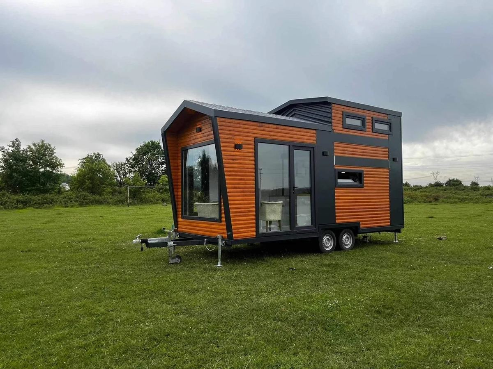</figure>
      <figcaption>Tekerlekli model · dış cephe uygulaması</figcaption>
      <figure style="height:52mm;margin-top:5mm">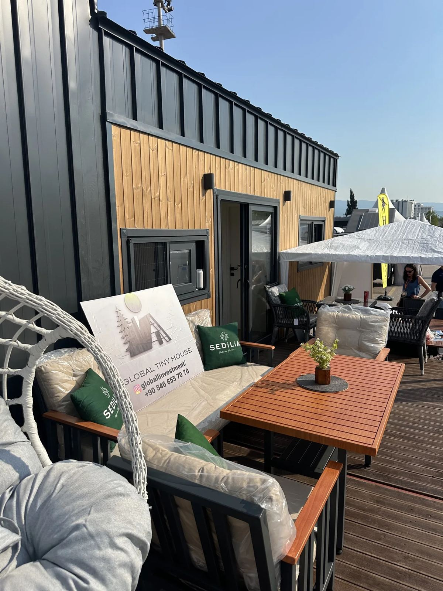</figure>
      <figcaption>Teras ve dış oturma alanı entegrasyonu</figcaption>
    </div>
  </div>
  <div class="cols3" style="margin-top:6mm">
    <div class="tile">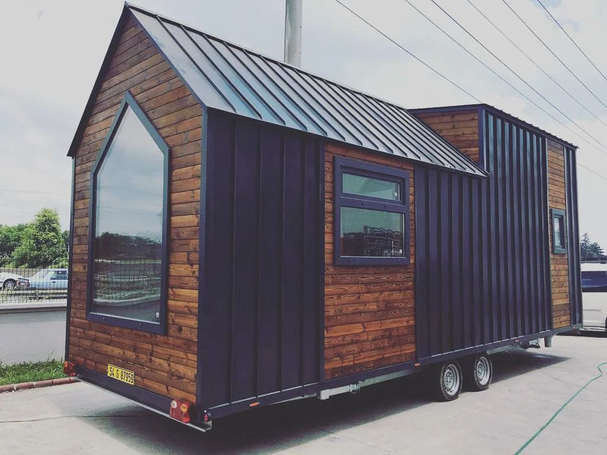<div class="body"><h4>Ahşap Cephe</h4><p>Doğal doku, sıcak görünüm</p></div></div>
    <div class="tile">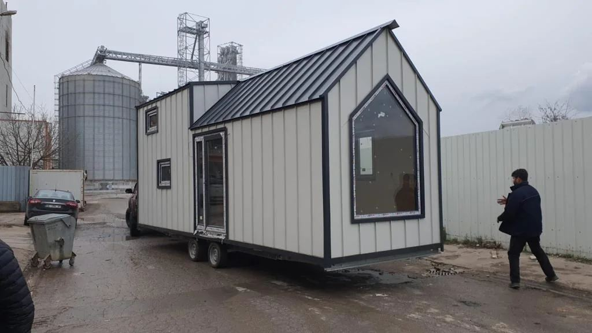<div class="body"><h4>Klasik Çatı</h4><p>Beşik çatı, metal kaplama</p></div></div>
    <div class="tile">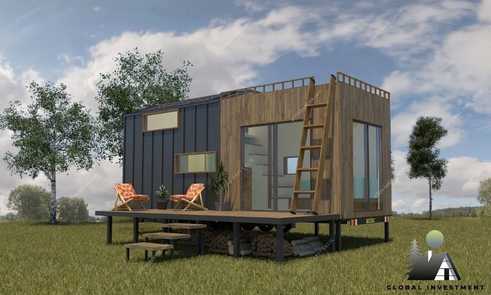<div class="body"><h4>Modern Kütle</h4><p>Düz çatı, geniş cam</p></div></div>
  </div>
  <div class="pfoot"><span>Tiny House</span><span>06</span></div>
</div></section>

<!-- ==================== 7 · TINY HOUSE İÇ MEKÂN ==================== -->
<section class="page"><div class="pad">
  <div class="topbar"><span class="sec">Modüler Yapılar · İç Mekân</span><span class="sec">07</span></div>
  <div class="eyebrow">Detay</div>
  <h2>İç mekânı biz kuruyoruz.</h2>
  <p style="max-width:135mm">
    Tiny house’un farkı iç mekânda ortaya çıkar. Mutfak tezgâhı, dolaplar,
    merdiven, loft korkuluğu ve banyo dolabı bizim üretimimizdir — dışarıdan
    hazır mobilya taşımak yerine hacme göre ölçülendirip yerinde kuruyoruz.
  </p>
  <div class="cols2" style="margin-top:6mm">
    <figure style="height:70mm">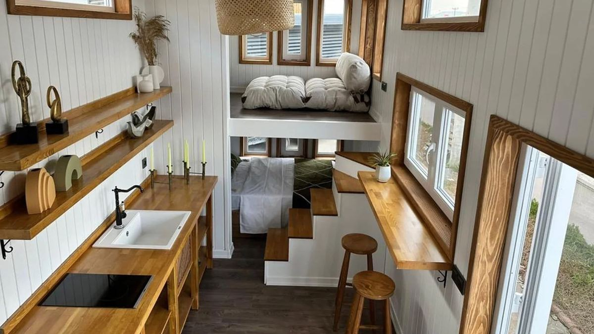</figure>
    <figure style="height:70mm"></figure>
  </div>
  <div class="cols3" style="margin-top:5mm">
    <div><figure style="height:52mm"></figure>
      <figcaption>Merdiven içi depolama ve gömme aydınlatma</figcaption></div>
    <div><figure style="height:52mm"></figure>
      <figcaption>Islak hacim · duş ve seramik uygulaması</figcaption></div>
    <div><figure style="height:52mm"></figure>
      <figcaption>Oturma alanı ve mutfak adası kurgusu</figcaption></div>
  </div>
  <div class="band" style="margin-top:7mm">
    <div class="eyebrow">Dar hacim çözümleri</div>
    <div class="cols3" style="margin-top:3mm">
      <div><h4 style="color:var(--mint)">Dikey Kullanım</h4><p>Loft yatak alanı, tavana kadar dolap, asma raf sistemleri.</p></div>
      <div><h4 style="color:var(--mint)">Gizli Depolama</h4><p>Basamak altı çekmece, sedir altı hacim, kaldırılabilir yatak platformu.</p></div>
      <div><h4 style="color:var(--mint)">Çok Amaçlı Mobilya</h4><p>Açılır masa, katlanır çalışma tezgâhı, yatağa dönüşen oturma birimi.</p></div>
    </div>
  </div>
  <div class="pfoot"><span>İç Mekân</span><span>07</span></div>
</div></section>

<!-- ==================== 8 · KIOSK & COFFEE ==================== -->
<section class="page"><div class="pad">
  <div class="topbar"><span class="sec">Modüler Yapılar · Kiosk</span><span class="sec">08</span></div>
  <div class="eyebrow">Ürün</div>
  <h2>Kiosk & Coffee Kiosk</h2>
  <div class="split">
    <div>
      <p class="lead">
        İşletmeye hazır satış üniteleri. Tezgâhı, elektrik altyapısı, su tesisatı
        ve ekipman yerleşimi kurulmuş halde teslim edilir — yerine konur, açılır.
      </p>
      <p>
        Kahve kiosku bizim en çok çalıştığımız tip. Espresso makinesi, değirmen,
        buzdolabı ve teşhir dolabının konumu daha tasarım aşamasında belirlenir;
        böylece barista tek adımda dönerek çalışabilir, tezgâh boşuna uzamaz.
      </p>
      <p>
        Cephe, işletmenin markasına göre giydirilir. Ahşap, kompozit panel,
        metal kaplama ve cam kombinasyonlarıyla çalışıyoruz; aydınlatma ve tabela
        altyapısı üniteye entegre çıkar.
      </p>
      <h4 style="margin-top:5mm;color:var(--green)">Nerede Kullanılır</h4>
      <ul class="check" style="margin-top:2mm">
        <li>AVM içi ve açık alan satış noktaları</li>
        <li>Cadde üstü kahve ve büfe üniteleri</li>
        <li>Kampüs, hastane ve iş merkezi içi işletmeler</li>
        <li>Festival, fuar ve etkinlik alanları</li>
      </ul>
    </div>
    <div>
      <figure style="height:60mm">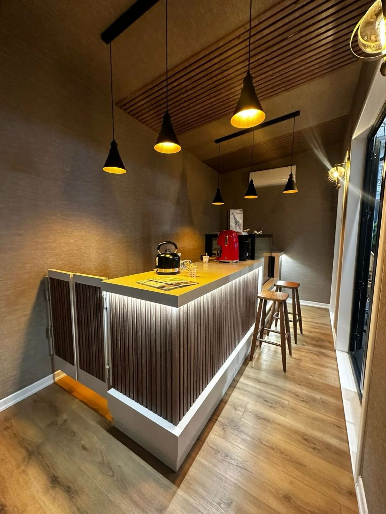</figure>
      <figcaption>Kahve ünitesi · tezgâh ve arka bar kurgusu</figcaption>
      <figure style="height:54mm;margin-top:5mm">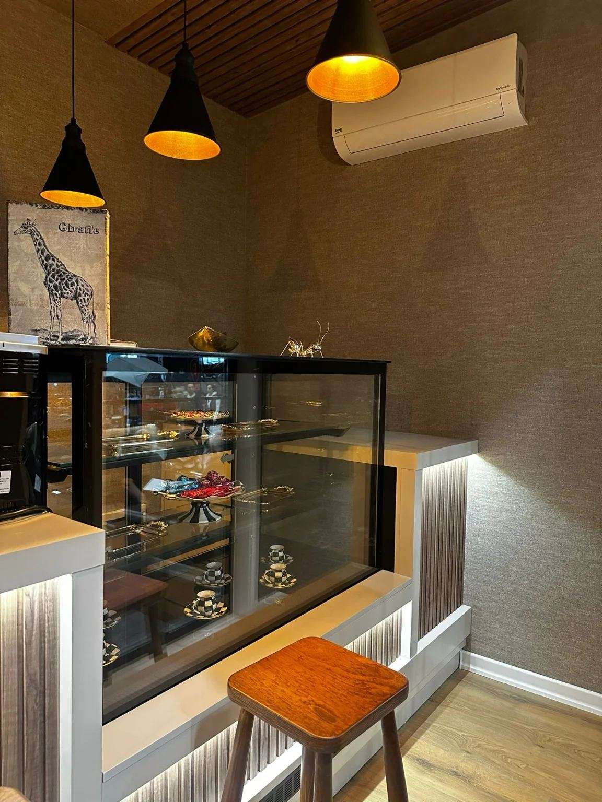</figure>
      <figcaption>Teşhir dolabı ve servis tezgâhı entegrasyonu</figcaption>
    </div>
  </div>
  <div class="cols2" style="margin-top:6mm">
    <div><figure style="height:50mm">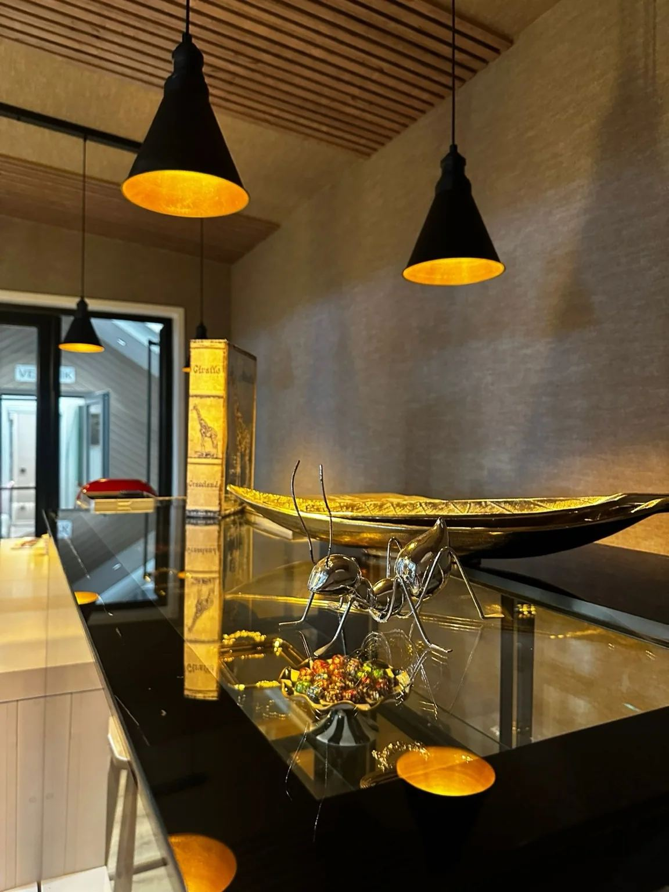</figure>
      <figcaption>Aydınlatma ve malzeme detayı</figcaption></div>
    <div>
      <table style="margin-top:1mm">
        <tr><th colspan="2">Standart Altyapı</th></tr>
        <tr><td class="k">Tezgâh</td><td>Kompakt lamine / ahşap / paslanmaz seçenekleri</td></tr>
        <tr><td class="k">Elektrik</td><td>Sigorta panosu, priz hattı, aydınlatma tesisatı</td></tr>
        <tr><td class="k">Su</td><td>Temiz ve atık su bağlantısı, tezgâh altı hazırlık</td></tr>
        <tr><td class="k">Havalandırma</td><td>Ekipman ısısına göre menfez ve fan çözümü</td></tr>
        <tr><td class="k">Cephe</td><td>Markaya göre kaplama, tabela ve aydınlatma yeri</td></tr>
      </table>
    </div>
  </div>
  <div class="pfoot"><span>Kiosk & Coffee Kiosk</span><span>08</span></div>
</div></section>

<!-- ==================== 9 · KARAVAN ==================== -->
<section class="page"><div class="pad">
  <div class="topbar"><span class="sec">Modüler Yapılar · Karavan</span><span class="sec">09</span></div>
  <div class="eyebrow">Ürün</div>
  <h2>Karavan</h2>
  <div class="split">
    <div>
      <p class="lead">
        Yolda dayanacak, durduğunda ev gibi olacak üniteler. Şasi seçiminden
        iç mekân yerleşimine kadar hareket halindeki yükü hesaba katarak üretiyoruz.
      </p>
      <p>
        Karavan üretiminde belirleyici olan ağırlık dağılımı ve bağlantı
        detaylarıdır. Dolaplar duvara sabitlenir, çekmeceler kilitli sistemle
        çalışır, tezgâh ve ıslak hacim titreşime göre yalıtılır. İzolasyon,
        yaz ve kış kullanımını birlikte gözetir.
      </p>
      <p>
        İç plan kullanım süresine göre değişir: hafta sonu kullanımı ile uzun
        yolculuk aynı depolama ihtiyacını doğurmaz. Mutfak, ıslak hacim, yatak
        ve oturma alanını ihtiyaç sırasına göre yerleştiriyoruz.
      </p>
      <h4 style="margin-top:5mm;color:var(--green)">Standart Kapsam</h4>
      <ul class="check" style="margin-top:2mm">
        <li>Şasi üzerine çelik iskelet ve izolasyonlu gövde</li>
        <li>Mutfak ünitesi, evye ve tezgâh altı depolama</li>
        <li>Islak hacim çözümü ve temiz/atık su deposu</li>
        <li>12V / 220V elektrik altyapısı ve aydınlatma</li>
        <li>Yatak platformu ve kaldırılabilir depolama</li>
      </ul>
    </div>
    <div>
      <figure style="height:64mm"></figure>
      <figcaption>Çekme karavan · ahşap cephe uygulaması</figcaption>
      <figure style="height:52mm;margin-top:5mm"></figure>
      <figcaption>Kompakt mutfak ve tezgâh düzeni</figcaption>
    </div>
  </div>
  <div class="band" style="margin-top:6mm;padding:5mm">
    <p style="margin:0;font-size:9pt">
      <b style="color:var(--mint)">Not:</b> Karavanların trafiğe tescili, ölçü ve
      ağırlık sınırları yürürlükteki mevzuata tabidir. Proje başlangıcında hedef
      kullanım şeklini birlikte değerlendirip uygun şasi ve ölçüyü belirliyoruz.
    </p>
  </div>
  <div class="pfoot"><span>Karavan</span><span>09</span></div>
</div></section>

<!-- ==================== 10 · KAFE / SOSYAL ALAN ==================== -->
<section class="page"><div class="pad">
  <div class="topbar"><span class="sec">Modüler Yapılar · Özel Projeler</span><span class="sec">10</span></div>
  <div class="eyebrow">Ürün</div>
  <h2>Kafe, restoran ve<br>sosyal alan üniteleri.</h2>
  <p style="max-width:135mm">
    Bir işletmeyi kurmak, dört duvar dikmekten fazlasıdır: mutfak akışı, servis
    mesafesi, oturma kapasitesi ve müşteri sirkülasyonu birlikte çözülmelidir.
    Modüler yapı burada avantaj sağlar — işletme kısa sürede açılır, gerektiğinde
    büyütülür veya taşınır.
  </p>
  <div class="cols2" style="margin-top:6mm">
    <figure style="height:72mm">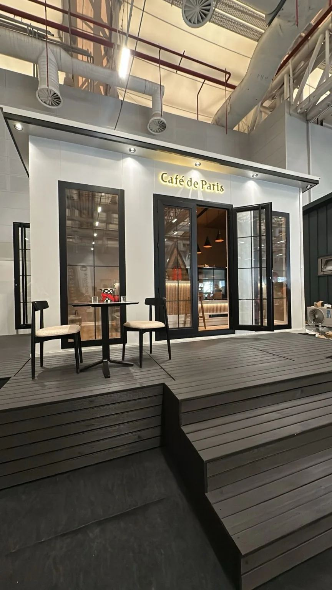</figure>
    <figure style="height:72mm"></figure>
  </div>
  <figcaption style="margin-bottom:5mm">Dış oturma alanı entegrasyonu ve iç mekân lounge kurgusu</figcaption>

  <div class="cols3">
    <div class="card"><h3>Kafe & Restoran</h3><p>Mutfak, bar, servis tezgâhı ve oturma alanı tek proje içinde çözülür.</p></div>
    <div class="card"><h3>Satış & Tanıtım Ofisi</h3><p>Proje sahasında hızla kurulan, iş bitiminde taşınabilen ofis üniteleri.</p></div>
    <div class="card"><h3>Sosyal Tesis</h3><p>Resepsiyon, soyunma, wc ve dinlenme birimleri için modüler çözümler.</p></div>
  </div>

  <div class="band" style="margin-top:6mm">
    <div class="eyebrow">Modüler yapının kazandırdıkları</div>
    <div class="cols3" style="margin-top:3mm">
      <div><h4 style="color:var(--mint)">Zaman</h4><p>Üretim atölyede sürerken saha hazırlığı paralel ilerler.</p></div>
      <div><h4 style="color:var(--mint)">Öngörülebilirlik</h4><p>Kapalı üretim, hava koşullarından bağımsız takvim demektir.</p></div>
      <div><h4 style="color:var(--mint)">Esneklik</h4><p>Ünite büyütülebilir, ikinci bir modülle genişletilebilir veya taşınabilir.</p></div>
    </div>
  </div>
  <div class="pfoot"><span>Özel Projeler</span><span>10</span></div>
</div></section>

<!-- ==================== 11 · AYRAÇ: MOBİLYA ==================== -->
<section class="page divider">
  
  <div class="veil"></div>
  <div class="inner">
    <div class="eyebrow light">Bölüm B</div>
    <h1>Mobilya ve<br>İç Mekân</h1>
    <p>
      Ölçüye özel üretim. Otel odasından ev mutfağına, mağaza tezgâhından ofis
      düzenlemesine kadar mobilyayı projeye göre tasarlayıp kendi atölyemizde
      üretiyor, montajını biz yapıyoruz.
    </p>
    <div class="bignum">B</div>
  </div>
</section>

<!-- ==================== 12 · OTEL MOBİLYASI ==================== -->
<section class="page"><div class="pad">
  <div class="topbar"><span class="sec">Mobilya · Otel</span><span class="sec">12</span></div>
  <div class="eyebrow">Ürün</div>
  <h2>Otel Mobilyası</h2>
  <div class="split">
    <div>
      <p class="lead">
        Otel mobilyası iki şeyi aynı anda başarmak zorundadır: misafire iyi
        görünmek ve yıllarca yoğun kullanıma dayanmak. Biz ikincisini malzeme
        ve birleşim detayında çözüyoruz.
      </p>
      <p>
        Tesis geneli projelerde standart bir oda takımı belirlenir ve seri
        üretime alınır. Böylece her oda birebir aynı olur, sonradan yenileme ve
        parça değişimi kolaylaşır. Suit ve özel odalar için ayrı çözüm üretilir.
      </p>
      <p>
        Oda dışında lobi, resepsiyon, restoran ve toplantı alanlarının mobilyasını
        da aynı proje kapsamında üstleniyoruz — böylece tesisin tamamında malzeme
        ve renk dili tutarlı kalıyor.
      </p>
      <h4 style="margin-top:5mm;color:var(--green)">Üretim Kapsamı</h4>
      <ul class="check" style="margin-top:2mm">
        <li>Karyola, başlık ünitesi ve komodin</li>
        <li>Gardırop, valiz sehpası, minibar ünitesi</li>
        <li>Çalışma masası, TV ünitesi ve ayna</li>
        <li>Banyo dolabı ve tezgâh uygulaması</li>
        <li>Lobi, resepsiyon ve restoran mobilyası</li>
      </ul>
    </div>
    <div>
      <div class="ph" style="height:62mm"><b>Görsel Alanı</b><span>Otel odası uygulaması — karyola, başlık ünitesi ve gardırop</span></div>
      <div class="ph" style="height:54mm;margin-top:5mm"><b>Görsel Alanı</b><span>Lobi veya resepsiyon mobilyası uygulaması</span></div>
    </div>
  </div>
  <div style="margin-top:6mm">
    <table>
      <tr><th>Konu</th><th>Yaklaşımımız</th></tr>
      <tr><td class="k">Dayanıklılık</td><td>Yoğun kullanıma uygun yüzey malzemesi, darbe alan köşelerde güçlendirme.</td></tr>
      <tr><td class="k">Tekrarlanabilirlik</td><td>Oda tipi başına standart takım; sonradan parça temini ve yenileme kolaylığı.</td></tr>
      <tr><td class="k">Montaj takvimi</td><td>Kat kat teslim ve montaj planı; işletmenin açık kalabilmesi için etaplama.</td></tr>
      <tr><td class="k">Bütünlük</td><td>Oda, lobi ve restoranda ortak malzeme ve renk paleti.</td></tr>
    </table>
  </div>
  <div class="pfoot"><span>Otel Mobilyası</span><span>12</span></div>
</div></section>

<!-- ==================== 13 · EV MOBİLYASI ==================== -->
<section class="page"><div class="pad">
  <div class="topbar"><span class="sec">Mobilya · Konut</span><span class="sec">13</span></div>
  <div class="eyebrow">Ürün</div>
  <h2>Ev Mobilyası</h2>
  <p style="max-width:135mm">
    Hazır mobilya evin ölçüsüne uymadığında ya boşluk kalır ya da bir şeyden
    vazgeçilir. Ölçüye özel üretimde bu sorun yoktur: dolap tavana kadar çıkar,
    tezgâh duvara tam oturur, köşeler değerlendirilir.
  </p>
  <div class="cols2" style="margin-top:6mm">
    <div><figure style="height:60mm"></figure>
      <figcaption>Mutfak · ölçüye özel dolap ve tezgâh uygulaması</figcaption></div>
    <div><figure style="height:60mm"></figure>
      <figcaption>Ada tezgâh ve oturma birimi çözümü</figcaption></div>
  </div>
  <div class="cols3" style="margin-top:5mm">
    <div><figure style="height:46mm"></figure>
      <figcaption>Dar mutfakta çift sıra yerleşim</figcaption></div>
    <div><figure style="height:46mm"></figure>
      <figcaption>Renkli kapak ve ahşap tezgâh birlikteliği</figcaption></div>
    <div><div class="ph" style="height:46mm"><b>Görsel Alanı</b><span>Gardırop veya TV ünitesi uygulaması</span></div></div>
  </div>
  <div class="cols2" style="margin-top:6mm">
    <div>
      <h4 style="color:var(--green)">Ürün Grupları</h4>
      <ul class="check" style="margin-top:2mm">
        <li>Mutfak dolabı, tezgâh ve ada uygulamaları</li>
        <li>Gardırop, vestiyer ve yürüme dolabı</li>
        <li>TV ünitesi, kitaplık ve duvar panelleri</li>
        <li>Banyo dolabı ve ayna ünitesi</li>
        <li>Ölçüye özel oturma ve yemek grupları</li>
      </ul>
    </div>
    <div>
      <h4 style="color:var(--green)">Süreç Nasıl İşler</h4>
      <ul class="dash" style="margin-top:2mm">
        <li>Evde ölçü alımı ve ihtiyaç görüşmesi</li>
        <li>Yerleşim çizimi ve malzeme seçimi</li>
        <li>Teklif ve takvim onayı</li>
        <li>Atölyede üretim</li>
        <li>Nakliye ve yerinde montaj</li>
        <li>Teslim ve kontrol turu</li>
      </ul>
    </div>
  </div>
  <div class="pfoot"><span>Ev Mobilyası</span><span>13</span></div>
</div></section>

<!-- ==================== 14 · OFİS & İŞ YERİ ==================== -->
<section class="page"><div class="pad">
  <div class="topbar"><span class="sec">Mobilya · Ofis ve İş Yeri</span><span class="sec">14</span></div>
  <div class="eyebrow">Ürün</div>
  <h2>Ofis, İş Yeri ve<br>Ofis Düzenleme</h2>
  <div class="split">
    <div>
      <p class="lead">
        Ofiste mobilya seçmeden önce cevaplanması gereken soru şudur: kaç kişi,
        nasıl çalışıyor? Alan planlamasını bu soruyla başlatıyor, mobilyayı
        ardından belirliyoruz.
      </p>
      <p>
        <b>Ofis düzenleme</b> hizmetimizde mevcut alanın ölçüsünü alıp yerleşim
        alternatifleri çıkarıyoruz: açık ofis mi bölmeli mi, kaç toplantı odası,
        sessiz çalışma alanı nerede, dolaşım koridorları nasıl akmalı. Karar
        verildikten sonra mobilya üretimine geçiyoruz.
      </p>
      <p>
        <b>İş yeri tarafında</b> mağaza, kafe ve restoranların tezgâh, raf, vitrin
        ve oturma birimlerini üretiyoruz. Perakendede raf düzeni satışı doğrudan
        etkilediği için ürün teşhir mantığını yerleşim aşamasında konuşuyoruz.
      </p>
    </div>
    <div>
      <figure style="height:58mm"></figure>
      <figcaption>Çalışma ve toplantı alanı uygulaması</figcaption>
      <div class="ph" style="height:56mm;margin-top:5mm"><b>Görsel Alanı</b><span>Ofis düzenleme veya mağaza tezgâhı uygulaması</span></div>
    </div>
  </div>
  <div class="cols3" style="margin-top:6mm">
    <div class="card"><div class="ico">01</div><h3>Çalışma Alanı</h3><p>Bireysel ve ortak masalar, bölücü paneller, kablo yönetimi, kişisel dolaplar.</p></div>
    <div class="card"><div class="ico">02</div><h3>Toplantı & Karşılama</h3><p>Toplantı masaları, resepsiyon bankosu, bekleme alanı oturma birimleri.</p></div>
    <div class="card"><div class="ico">03</div><h3>Mağaza & Kafe</h3><p>Satış tezgâhı, raf sistemi, vitrin, sabit oturma birimleri ve depo düzeni.</p></div>
  </div>
  <div class="band" style="margin-top:6mm;padding:5mm">
    <p style="margin:0;font-size:9pt">
      <b style="color:var(--mint)">Ofis düzenleme neyi içerir?</b>
      Mevcut alanın ölçülmesi · kullanıcı sayısı ve çalışma biçiminin analizi ·
      iki veya üç yerleşim alternatifi · seçilen plana göre mobilya listesi ·
      üretim, nakliye ve montaj.
    </p>
  </div>
  <div class="pfoot"><span>Ofis ve İş Yeri</span><span>14</span></div>
</div></section>

<!-- ==================== 15 · ÜRETİM VE MALZEME ==================== -->
<section class="page"><div class="pad">
  <div class="topbar"><span class="sec">Üretim</span><span class="sec">15</span></div>
  <div class="eyebrow">Atölye</div>
  <h2>Üretim ve Malzeme</h2>
  <div class="split">
    <div>
      <p class="lead">
        Üretimin tamamı kendi tesisimizde, kapalı alanda yapılır. Çelik
        konstrüksiyon, ahşap işçiliği ve mobilya üretimi aynı çatı altında
        yürüdüğü için ara nakliye ve ölçü kaybı olmaz.
      </p>
      <p>
        Malzeme seçimi projeye göre değişir. Bir sahil bölgesindeki tiny house
        ile şehir içi bir ofis aynı cephe malzemesini kaldırmaz; nem, güneş,
        kullanım yoğunluğu ve bütçe birlikte değerlendirilir. Seçenekleri
        avantaj ve dezavantajlarıyla birlikte önünüze koyuyoruz.
      </p>
      <h4 style="margin-top:4mm;color:var(--green)">Kalite Kontrol Noktaları</h4>
      <ul class="check" style="margin-top:2mm">
        <li>Konstrüksiyon ölçü ve gönye kontrolü</li>
        <li>İzolasyon sürekliliği ve su yalıtımı testi</li>
        <li>Elektrik hattı ve pano kontrolü</li>
        <li>Tesisat sızdırmazlık kontrolü</li>
        <li>Mobilya montaj, kapak ayarı ve yüzey kontrolü</li>
        <li>Sevk öncesi son kontrol ve fotoğraflı kayıt</li>
      </ul>
    </div>
    <div>
      <figure style="height:56mm"></figure>
      <figcaption>Üretim sahasında sevke hazır ünite</figcaption>
      <figure style="height:50mm;margin-top:5mm"></figure>
      <figcaption>İşçilik detayı · birleşim ve yüzey kalitesi</figcaption>
    </div>
  </div>
  <table style="margin-top:6mm">
    <tr><th>Yapı Elemanı</th><th>Kullandığımız Malzeme Seçenekleri</th></tr>
    <tr><td class="k">Taşıyıcı Konstrüksiyon</td><td>Çelik profil iskelet; tekerlekli modellerde çekme şasi</td></tr>
    <tr><td class="k">Dış Cephe</td><td>Ahşap lambri, kompozit panel, metal kaplama, fiber çimento levha</td></tr>
    <tr><td class="k">Yalıtım</td><td>Taşyünü / poliüretan esaslı ısı ve ses yalıtımı, buhar kesici membran</td></tr>
    <tr><td class="k">İç Kaplama</td><td>Ahşap lambri, alçıpan ve boya, dekoratif panel</td></tr>
    <tr><td class="k">Doğrama</td><td>PVC veya alüminyum, ısıcam; projeye göre sürme sistem</td></tr>
    <tr><td class="k">Mobilya Gövde</td><td>Suya dayanıklı MDF / yonga levha, melamin veya lake yüzey</td></tr>
    <tr><td class="k">Tezgâh</td><td>Kompakt lamine, ahşap, seramik veya paslanmaz</td></tr>
    <tr><td class="k">Donanım</td><td>Frenli menteşe, tam açılım ray, ayarlanabilir ayak sistemi</td></tr>
  </table>
  <div class="pfoot"><span>Üretim ve Malzeme</span><span>15</span></div>
</div></section>

<!-- ==================== 16 · NASIL ÇALIŞIYORUZ ==================== -->
<section class="page"><div class="pad">
  <div class="topbar"><span class="sec">Süreç</span><span class="sec">16</span></div>
  <div class="eyebrow">Nasıl çalışıyoruz</div>
  <h2>Yedi adımda proje.</h2>
  <p style="max-width:135mm">
    Her projede aynı sırayı izliyoruz. Bu sıra, sürprizleri işin sonunda değil
    başında görmemizi sağlar — değişiklik yapmanın en ucuz olduğu an, henüz
    hiçbir şey kesilmemişken geçen andır.
  </p>
  <div style="margin-top:5mm">
    <div class="step"><div class="n">01</div><div><h3>İhtiyaç Görüşmesi</h3>
      <p>Kullanım amacı, kişi sayısı, kurulum yeri ve bütçe aralığını konuşuruz. Bu aşamada bize ne kadar çok anlatırsanız, teklif o kadar gerçekçi çıkar.</p></div></div>
    <div class="step"><div class="n">02</div><div><h3>Yer Tespiti ve Ölçü</h3>
      <p>Modüler yapılarda kurulum alanının zemini, erişimi ve altyapısı; mobilyada mekânın ölçüsü yerinde alınır. Uzak projelerde ölçü ve fotoğraf yönlendirmesiyle ilerleyebiliriz.</p></div></div>
    <div class="step"><div class="n">03</div><div><h3>Tasarım ve Yerleşim</h3>
      <p>Plan çizimi ve gerektiğinde üç boyutlu görsel hazırlanır. Malzeme, renk ve donanım seçenekleri karşılaştırmalı olarak sunulur.</p></div></div>
    <div class="step"><div class="n">04</div><div><h3>Teklif ve Sözleşme</h3>
      <p>Kapsam, fiyat, ödeme planı ve teslim takvimi yazılı hale gelir. Neyin dahil olduğu kadar neyin dahil olmadığı da açıkça yazılır.</p></div></div>
    <div class="step"><div class="n">05</div><div><h3>Üretim</h3>
      <p>Atölyede üretim başlar. Süreç boyunca fotoğraflı ilerleme paylaşımı yapılır; ara kontrol için tesise davet edilirsiniz.</p></div></div>
    <div class="step"><div class="n">06</div><div><h3>Kalite Kontrol</h3>
      <p>Konstrüksiyon, elektrik, tesisat ve mobilya kontrol listesi üzerinden geçilir. Eksikler sevkten önce kapatılır.</p></div></div>
    <div class="step"><div class="n">07</div><div><h3>Nakliye, Montaj ve Teslim</h3>
      <p>Ünite veya mobilya sahaya taşınır, kurulur ve çalışır halde teslim edilir. Kullanım bilgilendirmesi yerinde yapılır.</p></div></div>
  </div>
  <div class="pfoot"><span>Nasıl Çalışıyoruz</span><span>16</span></div>
</div></section>

<!-- ==================== 17 · TESLİMAT & GARANTİ ==================== -->
<section class="page"><div class="pad">
  <div class="topbar"><span class="sec">Teslimat</span><span class="sec">17</span></div>
  <div class="eyebrow">Teslim sonrası</div>
  <h2>Nakliye, montaj,<br>garanti ve destek.</h2>
  <div class="cols2" style="margin-top:5mm">
    <div class="card">
      <div class="ico">01</div><h3>Nakliye</h3>
      <p style="margin-bottom:2mm">Ürün ölçüsüne ve hedef konuma göre planlanır. Modüler yapılarda özel araç ve gerektiğinde vinç organizasyonu bize aittir.</p>
      <ul class="dash" style="margin-top:2mm">
        <li>Türkiye geneli teslimat</li>
        <li>Sevk öncesi güzergâh ve erişim kontrolü</li>
        <li>Yükleme sırasında koruma ve sabitleme</li>
      </ul>
    </div>
    <div class="card">
      <div class="ico">02</div><h3>Montaj</h3>
      <p style="margin-bottom:2mm">Kurulum kendi ekibimizce yapılır. Modüler yapılarda zemin hazırlığı ve altyapı bağlantı noktaları önceden bildirilir.</p>
      <ul class="dash" style="margin-top:2mm">
        <li>Yerine konumlandırma ve terazileme</li>
        <li>Elektrik ve su bağlantılarının yapılması</li>
        <li>Mobilya montajı ve son ayarlar</li>
      </ul>
    </div>
    <div class="card">
      <div class="ico">03</div><h3>Garanti</h3>
      <p style="margin-bottom:2mm">Üretim ve işçilik kaynaklı sorunlar garanti kapsamındadır. Süre ve kapsam ürün grubuna göre sözleşmede belirtilir.</p>
      <ul class="dash" style="margin-top:2mm">
        <li>Konstrüksiyon ve işçilik güvencesi</li>
        <li>Mobilya donanımı ve yüzey garantisi</li>
        <li>Kullanım hatası ve doğal aşınma kapsam dışı</li>
      </ul>
    </div>
    <div class="card">
      <div class="ico">04</div><h3>Satış Sonrası</h3>
      <p style="margin-bottom:2mm">Teslimden sonra da aynı numaradan ulaşırsınız. Yedek parça ve ilave üretim taleplerini karşılıyoruz.</p>
      <ul class="dash" style="margin-top:2mm">
        <li>Yedek parça ve donanım temini</li>
        <li>İlave modül veya mobilya üretimi</li>
        <li>Tadilat ve yenileme desteği</li>
      </ul>
    </div>
  </div>
  <div class="band" style="margin-top:6mm">
    <div class="eyebrow">Müşterinin hazırlaması gerekenler</div>
    <div class="cols3" style="margin-top:3mm">
      <div><h4 style="color:var(--mint)">Zemin</h4><p>Modüler yapı için düz ve taşıyıcı zemin ya da hazırlanmış temel.</p></div>
      <div><h4 style="color:var(--mint)">Altyapı</h4><p>Elektrik, temiz su ve atık su bağlantı noktalarının üniteye yakın olması.</p></div>
      <div><h4 style="color:var(--mint)">Erişim</h4><p>Nakliye aracının ve gerekiyorsa vincin sahaya girebileceği bir yol.</p></div>
    </div>
  </div>
  <div class="pfoot"><span>Teslimat ve Garanti</span><span>17</span></div>
</div></section>

<!-- ==================== 18 · SSS ==================== -->
<section class="page"><div class="pad">
  <div class="topbar"><span class="sec">Sık Sorulan Sorular</span><span class="sec">18</span></div>
  <div class="eyebrow">Merak edilenler</div>
  <h2>Sık Sorulan Sorular</h2>
  <div style="margin-top:4mm">
    <div class="qa"><h4>Üretim ne kadar sürer?</h4>
      <p>Süre ürün grubuna ve kapsama göre değişir. Bir kiosk ile tam donanımlı bir tiny house aynı takvimde bitmez. Teklif aşamasında net bir teslim tarihi veriyor ve sözleşmeye yazıyoruz.</p></div>
    <div class="qa"><h4>Tiny house için ruhsat gerekir mi?</h4>
      <p>Ruhsat ve izin durumu arazinin niteliğine, imar durumuna ve bulunduğu belediyenin uygulamasına göre değişir. Sabit kurulumlarda ilgili belediyeden bilgi alınmasını öneriyoruz; süreç boyunca teknik dosya desteği veriyoruz.</p></div>
    <div class="qa"><h4>Kendi projemi getirebilir miyim?</h4>
      <p>Evet. Elinizdeki çizim, görsel veya referans üzerinden çalışabiliriz. Üretilebilirlik açısından değerlendirip gerekiyorsa revizyon önerisiyle birlikte teklif hazırlıyoruz.</p></div>
    <div class="qa"><h4>Mobilyayı yapıdan bağımsız sipariş edebilir miyim?</h4>
      <p>Evet. Mobilya üretimi tek başına verilebilen bir hizmettir; ev mutfağından otel odası takımına kadar yapı işi olmadan da çalışıyoruz.</p></div>
    <div class="qa"><h4>Şehir dışına teslimat yapıyor musunuz?</h4>
      <p>Türkiye genelinde teslimat yapıyoruz. Nakliye ve montaj organizasyonu bize aittir; mesafeye göre maliyet teklifte ayrı kalem olarak gösterilir.</p></div>
    <div class="qa"><h4>Kış aylarında kullanılabilir mi?</h4>
      <p>Evet. Yalıtım, kurulum yapılacak bölgenin iklimine göre belirlenir. Soğuk bölgelerde yalıtım kalınlığı ve doğrama seçimi buna göre artırılır.</p></div>
    <div class="qa"><h4>Ödeme nasıl ilerliyor?</h4>
      <p>Sözleşme ile başlayan, üretim aşamalarına bağlı bir ödeme planı uyguluyoruz. Plan proje büyüklüğüne göre teklif aşamasında birlikte belirlenir.</p></div>
    <div class="qa"><h4>Üretimi görebilir miyim?</h4>
      <p>Tabii. Üretim sürecinde fotoğraflı bilgilendirme yapıyoruz, ayrıca tesisimize gelip işin durumunu yerinde görebilirsiniz.</p></div>
    <div class="qa"><h4>Sonradan büyütmek veya değiştirmek mümkün mü?</h4>
      <p>Modüler yapılarda ilave modül eklenebilir. Mobilyada da aynı malzeme ve renkle ilave üretim yapıyoruz; bu nedenle proje kayıtlarını saklıyoruz.</p></div>
  </div>
  <div class="pfoot"><span>Sık Sorulan Sorular</span><span>18</span></div>
</div></section>

<!-- ==================== 19 · İLETİŞİM ==================== -->
<section class="page contact">
  <div class="inner">
    <div>
      <div class="wordmark">GLOBAL<small>YAPI GELİŞTİRME A.Ş.</small></div>
    </div>
    <div>
      <div class="eyebrow light">Projenizi konuşalım</div>
      <h1 style="margin-top:5mm">Bir fikriniz varsa,<br>ölçüsünü birlikte alalım.</h1>
      <p style="max-width:120mm;margin-top:5mm;font-size:10.5pt">
        Modüler yapı ya da mobilya — ihtiyacınızı anlatın, size uygun çözümü ve
        gerçekçi bir takvimi birlikte çıkaralım. İlk görüşme ve keşif ücretsizdir.
      </p>
      <div class="cols3" style="margin-top:8mm">
        <div class="cbox"><h4>Telefon</h4><div class="v">+90 546 655 70 70</div></div>
        <div class="cbox"><h4>E-posta</h4><div class="v" style="font-size:9.5pt">info@globalinvestment.com.tr</div></div>
        <div class="cbox"><h4>Web</h4><div class="v" style="font-size:10.5pt">globalyapicelik.net</div></div>
      </div>
    </div>
    <div style="border-top:1px solid rgba(255,255,255,.2);padding-top:4mm;display:flex;justify-content:space-between;font-size:7.5pt;letter-spacing:.14em;text-transform:uppercase;color:#B5A9A4">
      <span>Global Investment Yapı Geliştirme A.Ş.</span>
      <span>Ürün ve Hizmet Kataloğu · 2026</span>
    </div>
  </div>
</section>
